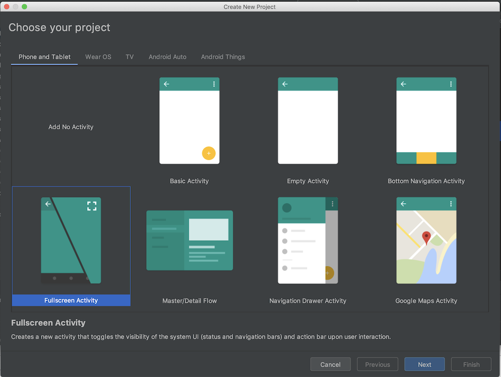

Getting Started With the Player SDK for Android
This guide will walk you through the steps for adding a Kaltura video player to your Android mobile application, using the Kaltura Player. The library is a super-collection of all Kaltura Playkit libraries, which include the Player, Kaltura Analytics, and various Providers that can access the Kaltura Backend. Using the Kaltura Player library makes it easier to take advantage of all player capabilities.
In this Kotlin tutorial, you’ll learn how to import the Kaltura Player SDK, find the necessary credentials, and load the player with your Entry ID of choice. Because the player is focused on performance and giving you the simplest integration possible, it does not contain a UI. That being said, this guide will show you how to listen to events in order to manage the player state, as well as examples for adding play/pause buttons and a slider to the player.
If you prefer to see a Java sample, click here.
Before You Begin
You’ll need two things:
- Your Kaltura Partner ID, which can be found in the KMC under Settings>Integration Settings
- Any video entry, which can be found in the KMC as well.
Setting Up OVP Player
Begin by creating a new project in Android Studio. For this guide we chose the Fullscreen Activity Preset, to make it simpler to view the player in full-screen:

The FullScreenActivity.kt comes pre-loaded with functions for showing and hiding the Action Bar and the Controls menu, to achieve the full-screen functionality.
Compile Options
Depending on your Compile Settings, you might get an error about Invoke-customs or supported release versions. In that case should add java 1.8 to your compile options in build.gradle
android {
compileSdkVersion 28
android {
compileOptions {
sourceCompatibility 1.8
targetCompatibility 1.8
}
}Dependencies
In your build.gradle add the Kaltura-Player dependency:
implementation 'com.kaltura.player:tvplayer:4.x.x'Appication/Splash Activity
KalturaOvpPlayer should be initialized in the application class or in a splash activity before using the player.
KalturaOvpPlayer.initialize(this, OVP_PARTNER_ID, OVP_SERVER_URL)
Imports
In the FullScreenActivity.kt, import the following:
import com.kaltura.playkit.PlayerState
import com.kaltura.tvplayer.KalturaPlayer
import com.kaltura.tvplayer.OVPMediaOptions
import com.kaltura.tvplayer.PlayerInitOptionsConstants
Static variables in Kotlin are placed in the Companion Object, which acts as an inner singleton class that gives access to its members as direct members of the class.
In our Companion Object, we’ll declare the log-tag and Partner ID:
companion object {
private const val TAG = "FullscreenActivity"
public const val OVP_SERVER_URL = "https://cdnapisec.kaltura.com"
public const val PARTNER_ID = 2215841
}Class Variables
For starters you’ll need the ID of the entry, or video, that you want to display in the player. You can find this in the KMC under Content.
You’ll need an object for the Player, and you’ll also need to hold onto the Player State (for playing and pausing):
private val entryId = "1_w9zx2eti"
private var player: KalturaPlayer? = null
private var playerState: PlayerState? = nullThe Player
Create a new function called loadPlaykitPlayer. This function will:
- Set configuration and behavior (auto-play set to True)
- Initialize the player
- Create a view that is determined by the size of the player using
fullscreen_contentobject that was created by the Fullscreen preset - Load the media entry inside the player using OVP Provider Object
- Use built in Log object to document an error if loading the entry fails
- Set the global Player to the new one if nothing fails
- Call
addPlayerStateListenerfunction
private fun loadPlaykitPlayer() {
val playerInitOptions = PlayerInitOptions(PARTNER_ID) //player config/behavior
playerInitOptions.setAutoPlay(true)
val player = KalturaOvpPlayer.create(this@FullscreenActivity, playerInitOptions) ?: return
player.setPlayerView(FrameLayout.LayoutParams.WRAP_CONTENT, FrameLayout.LayoutParams.WRAP_CONTENT)
fullscreen_content.addView(player.playerView)
val ovpMediaOptions = buildOvpMediaOptions()
player.loadMedia(ovpMediaOptions) { entry, loadError ->
if (loadError != null) {
Snackbar.make(findViewById(android.R.id.content), loadError.message, Snackbar.LENGTH_LONG).show()
} else {
Log.d(tag, "OVPMedia onEntryLoadComplete entry = " + entry.id)
}
}
this.player = player
addPlayerStateListener()
}Provider Options
The provider helps the player access the Kaltura backend. The entryId is checked against the API, and there is an option to pass a Kaltura Session, which is always recommended when creating a player. If your application doesn’t already generate a Kaltura Session, read this to learn more.
Create a function called buildOvpMediaOptions. The apply keyword in Kotlin will run the code block and pass the receiver, or in this case, mediaOptions as this.
private fun buildOvpMediaOptions(): OVPMediaOptions {
val mediaOptions = OVPMediaOptions().apply {
entryId = myEntryId
ks = null
}State Listener
Create another function called addPlayerStateListener. It sets the state of the player any time it changes and logs the state change.
private fun addPlayerStateListener() {
player!!.addListener<PlayerEvent.StateChanged>(this, PlayerEvent.stateChanged) { event ->
Log.d(TAG, "State changed from " + event.oldState + " to " + event.newState)
playerState = event.newState
}
}onCreate
Let’s put all the pieces together. In the onCreate function, you’ll need to call the functions we just created:
loadPlaykitPlayer()
addPlayPauseButton()We removed the setOnTouchListner for the button, and ended up with something that looks like this:
override fun onCreate(savedInstanceState: Bundle?) {
super.onCreate(savedInstanceState)
setContentView(R.layout.activity_fullscreen)
supportActionBar?.setDisplayHomeAsUpEnabled(true)
mVisible = true
loadPlaykitPlayer()
addPlayPauseButton()
fullscreen_content.setOnClickListener { toggle() }
}If you run the app now, you should see the player, and your video should start automatically. If you turn off the screen lock, you’ll see that the video becomes fullscreen and that the buttons disappear. Notice however that you have no way of pausing the video. We’ll need play and pause buttons.
Play and Pause
The Fullscreen project has already created two buttons for us. In this example we removed one of the buttons and called the other one playPauseButton. We also turned it into an imageButton (instead of text) so that we can use proper images from the Exo image library that we imported earlier.
<ImageButton
android:layout_width="0dp"
android:layout_height="wrap_content" app:srcCompat="@drawable/exo_controls_play"
android:id="@+id/playPauseButton" android:layout_weight="1" android:background="#00FFFFFF"/>The addPlayPauseButton sets the button to rely on Player state in order to know which image to show. Meaning if the video is playing, the button should show a pause icon, and when the button is clicked, the video pauses and the image turns to a play icon.
private fun addPlayPauseButton() {
playPauseButton!!.setOnClickListener { v ->
if (player != null) {
if (player!!.isPlaying) {
//If player is playing, change text of the button and pause.
player!!.pause()
playPauseButton!!.setImageResource(R.drawable.exo_controls_play)
} else {
//If player is not playing, change text of the button and play.
player!!.play()
playPauseButton!!.setImageResource(R.drawable.exo_controls_pause)
}
}
}
}We made a few other changes to the activity XML, like turning the view into a LinearLayout. See full XML:
<?xml version="1.0" encoding="utf-8"?>
<FrameLayout xmlns:android="http://schemas.android.com/apk/res/android"
xmlns:app="http://schemas.android.com/apk/res-auto" xmlns:tools="http://schemas.android.com/tools"
android:layout_width="match_parent"
android:layout_height="match_parent"
android:background="#0099cc"
tools:context=".FullscreenActivity">
<LinearLayout android:id="@+id/fullscreen_content"
android:layout_width="match_parent"
android:layout_height="match_parent"
android:keepScreenOn="true"
android:gravity="center" android:orientation="horizontal"/>
<FrameLayout android:layout_width="match_parent"
android:layout_height="match_parent"
android:fitsSystemWindows="true">
<LinearLayout android:id="@+id/fullscreen_content_controls"
style="?metaButtonBarStyle"
android:layout_width="match_parent"
android:layout_height="wrap_content"
android:layout_gravity="bottom|center_horizontal"
android:background="@color/black_overlay"
android:orientation="horizontal"
tools:ignore="UselessParent">
<ImageButton
android:layout_width="0dp"
android:layout_height="wrap_content" app:srcCompat="@drawable/exo_controls_play"
android:id="@+id/playPauseButton" android:layout_weight="1" android:background="#00FFFFFF"/>
</LinearLayout>
</FrameLayout>
</FrameLayout>